Database as a service using Software Template Patterns
Introduction
In this exercise, you will learn how to work with Software templates in Red Hat Developer Hub and create a new instance of Red Hat Data Grid (based on the Infinispan project) from Red Hat Developer Hub. Red Hat Data Grid is an open-source in-memory database that can hold nearly any type of data, from plain-text to structured objects.
This lab will create the instance using an existing template that is not yet complete. You will work on adding the Infinispan instance as part of this template. During this lab, you will explore how to build clusters for Data Grid, with the main goal of learning different options to build and deploy new components into OpenShift using a self-service approach.
Data Grid Operator overview
You will use the Data Grid Operator to create a new instance of Data Grid. The Data Grid Operator is a Kubernetes operator that manages the lifecycle of Data Grid clusters. The operator is pre-installed for you, and the Software Template you create will use it to create new Data Grid clusters, through OpenShift GitOps. This image shows the Data Grid Operator in action, where users create Custom Resources on the cluster, and the operator responds by creating the corresponding Data Grid clusters.
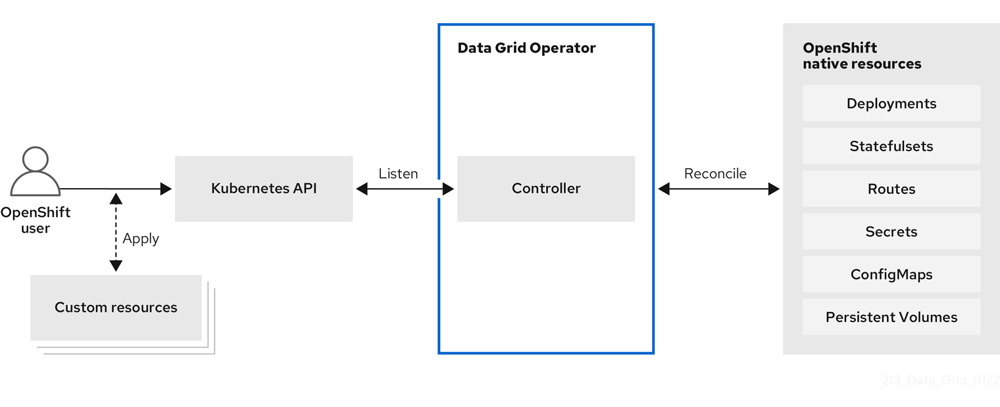
Scenario
Now, imagine that you need to fulfill a need for the Java Development team. The Java Team needs to connect a new application with Data Grid for their development environment.
Explore the Project template in GitLab
-
Take the time to {gitlab_url}/rhdh/rhads-enablement-l3-st-self-service/-/blob/main/rhdatagrid_infinispan[review existing template^] in GitLab to get familiar with the content. If you need to log in, use your GitLab credentials:
-
Username: {gitlab_user}
-
Password: {gitlab_user_password}
-
Open the following files or folders to examine their contents:
-
template.yaml: This file defines the UI experience for the end user in Developer Hub (e.g. the fields and drop-downs and selectors to define the configuration of the namespace in this case) and the programmatic steps to define the logic to be executed as part of the component’s creation: create repositories, create GitOps objects, and more. -
skeleton/catalog-info.yaml: This file represents a descriptor file used to define and register entities and will contain information displayed in the component’s overview, such as source code, technical docs links. All of the placeholders (e.g.,${{values.component_id}}) are replaced with actual values the user enters or are dynamically computed when the template is used. -
manifests/argocd: This folder contains the Argo CD application definitions and necessary secrets to read from the SCM. In this case, theargo-app-dev.yamlis the Argo CD Application pointing to the Kubernetes manifest folder, in this case, the VM’s manifests. The file name contains the component’s ID name, which will be populated from the RHDH template when the final file is created for the user in their git repository. Developer Hub, powered by GitOps, maintains the desired state (defined in the manifests)as the actual state in the cluster for any template definitions, ensuring system stability. -
manifests/helm/app: This folder contains a Helm chart that will be used to create the Data Grid cluster and other associated resources. OpenShift GitOps will use this Helm chart to create resources on the cluster by combining user-supplied values with the files and creating the resulting objects in OpenShift. When these files are updated in the user’s git repo, OpenShift GitOps will automatically deploy (sync) the changes to maintain the desired state, ensuring system stability.
Explore the Data Grid template in Developer Hub
-
Access the {rhdh_url}[Red Hat Developer Hub UI^]. If you need to, log in with your credentials:
-
Username:
{openshift_admin_user} -
Password:
{openshift_admin_password}
-
-
Select the plus icon on the top navigation bar to access the Create option or from URL {rhdh_url}/create[Red Hat Developer Hub UI Create^]

-
Click the Import an existing Git repository button.

-
Enter the following URL in the Select URL field and click Analyze:
{gitlab_url}/rhdh/rhads-enablement-l3-st-self-service/-/blob/main/rhdatagrid_infinispan/template.yaml-
Click the Import button
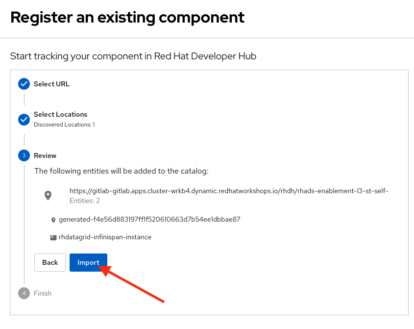
Congratulations! You now have a new Software template in Developer Hub. Now, end-users can self-provision Data Grid.
We’ll explore the end-user experience by accessing the Software Templates view.
-
Navigate to Catalog → Self-service
-
Look for the RH Data Grid infinispan catalog
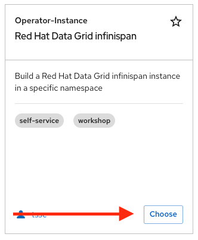
-
Click on Choose
-
Review and fill out the form with sample data until you reach the review screen, without creating the RH Data Grid. DO NOT CLICK ON CREATE.
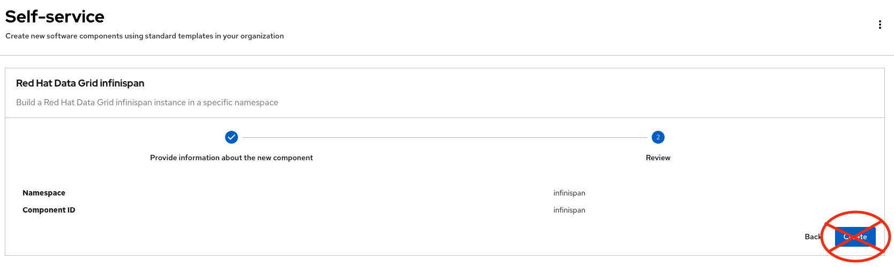
Implement changes in Software Templates
To do this, you need to add a new file named infinispan.yaml to the manifests/helm/app/templates folder. This file defines the Infinispan instance that the operator will use to create the Data Grid cluster.
The Java Team can then use Data Grid clusters by creating a new cluster from Developer Hub. Developer Hub will then use GitOps to create a new Data Grid cluster in OpenShift.
Edit the template
-
Click on Catalog on the Developer Hub menu
-
Next, select the filters: Kind:Template and Tags: self-service As shown in the following picture:

-
Select the Red Hat Data Grid infinispan
-
Access the Source code by clicking on View Source
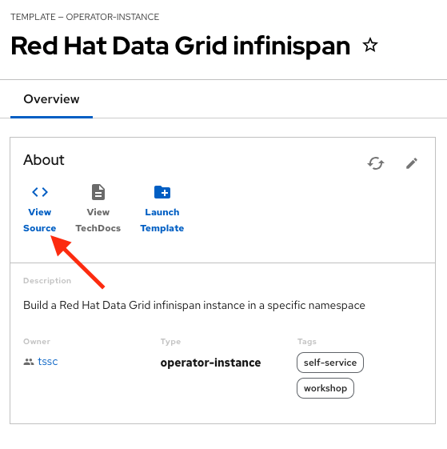
-
Navigate to the {gitlab_url}/rhdh/rhads-enablement-l3-st-self-service/-/tree/main/rhdatagrid_infinispan/manifests/helm/app/templates[templates folder^] (it’s in the
manifests/helm/appfolder). This folder contains the Kubernetes objects required to build the component in a Kubernetes cluster. -
Create a new file named
infinispan.yamlby clicking the+button and selecting New File:
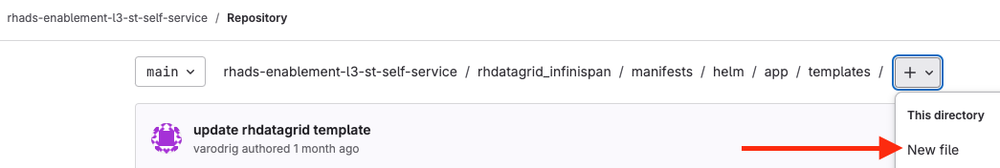
Review the official documentation on how to create a Data Grid instance. This example is very simple, but in the future you can add more options to the instance, such as different storage options, different authentication methods, etc.
-
For now, we’ll use a basic configuration, so paste this content into the new file in GitLab:
kind: Infinispan
apiVersion: infinispan.org/v1
metadata:
name: {{ .Values.app.name }} (1)
labels:
{{- include "operator.labels" . | nindent 4 }} (2)
{{- include "backstage.labels" . | nindent 4 }}
spec:
replicas: 2 (3)
service:
type: DataGrid
expose:
type: Route (4)
security:
endpointSecretName: connect-secret (5)| 1 | This will be replaced with the user-supplied value for the Data Grid instance name |
| 2 | The labels for the Data Grid instance, using Helm variables to include the operator and backstage labels which integrate with Developer Hub’s various plugins and help surface useful information in the context of the component. |
| 3 | The number of replicas for the Data Grid cluster. Additional replicas can be added to the cluster to improve performance and availability. |
| 4 | This option exposes the Data Grid cluster to outside traffic |
| 5 | Custom credentials from a Secret (defined in identities.yaml) as defined in the docs for Data Grid authentication enabling authenticated access.
|
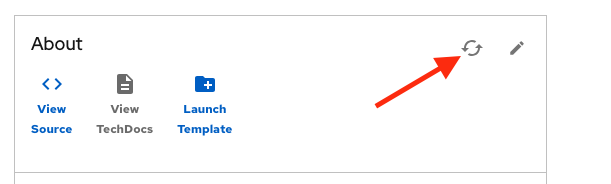
Test your changes: Explore the user experience as Developer
Now, you will create a new instance of the Data Grid cluster defined in the software templates.
-
From catalog, select Self-service and find the Red Hat Data Grid infinispan
-
Click on Choose
-
Review the information until you complete the flow and click Create (Feel free to use the default values or enter your own Data Grid cluster name).
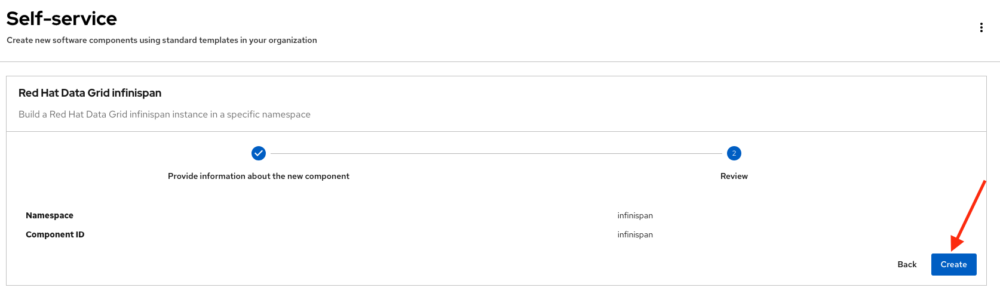
-
Open the catalog from the component’s creation page:
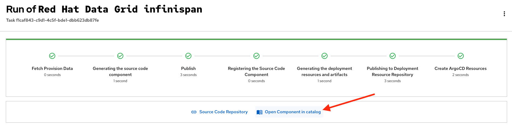
-
The component has been created, and you should see a screen like this:
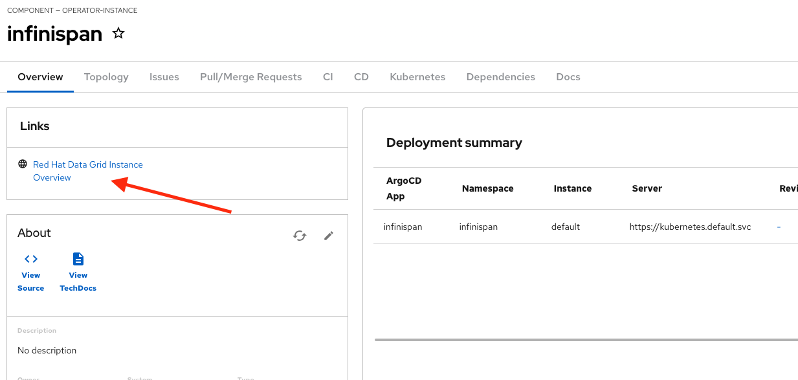
Verify the Data Grid cluster was created
-
Click on Data Grid URL from the component’s overview (It may take a few moments for the Data Grid cluster to be created, so wait a few moments and try again if you don’t see the Data Grid login page)
-
Access RH Data Grid with the credentials:
-
user:
user1 -
password:
openshift!3415@
-
-
Click on Proceed, next click on Open the console
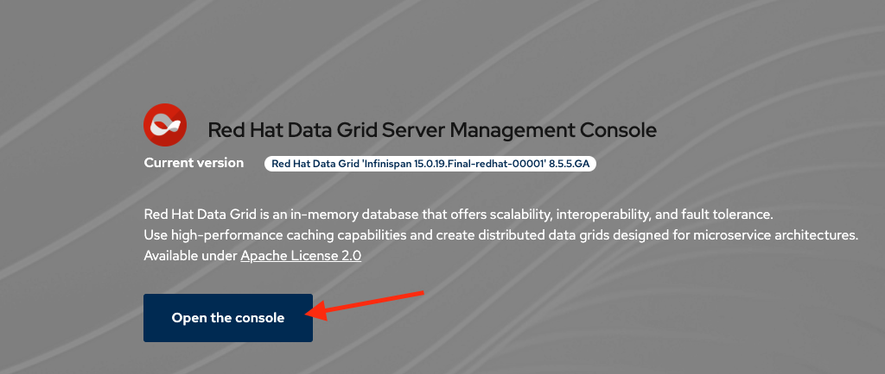
-
You should see a screen like this:
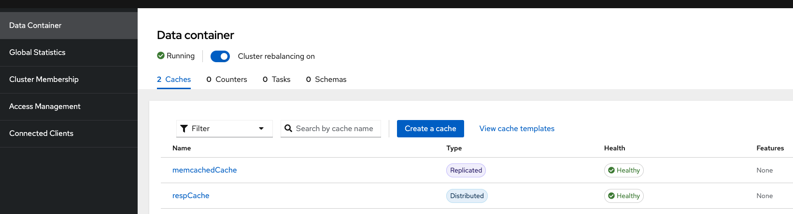
|
In a Data Grid production environment, the security setup and user creation would not be managed in this way. Explore the Data Grid authentication documentation to learn more about best practices. |
Conclusion
🎉 Congratulations! You have created a new Data Grid template by adding the Infinispan instance to fulfill the requirement from the Java Development team.
In this hands-on lab, you’ve accomplished something powerful:
-
Created a database-as-a-service offering - The Java Development team can now instantly provision Red Hat Data Grid clusters without manual intervention from platform teams
-
Implemented template customization - You learned how to extend existing templates by adding new components and configurations
-
Bridged infrastructure and application needs - You’ve created a seamless experience where developers can provision the data layer they need while GitOps handles deployment automatically
After this process, other configurations can be applied to the cluster. Explore more at Configuring Clusters
What’s next? Consider how you might extend this pattern to include monitoring, backup strategies, or different Data Grid configurations for various environments!